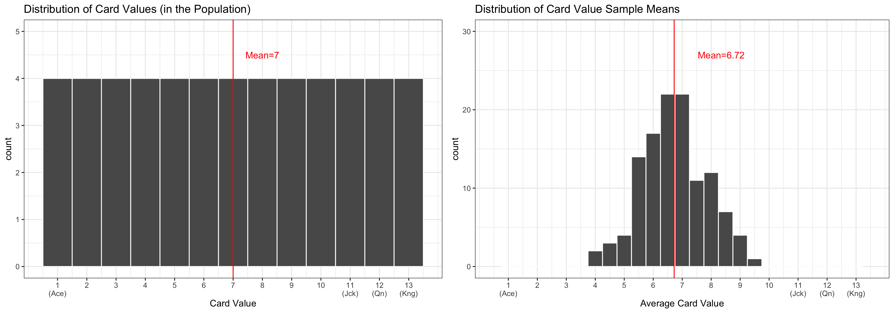

Sampling Distributions II
Megan Ayers
Stat 141 | Fall 2026
Friday, Week 6
Announcements
Midterm studyguide posted on course website
We’ll work on the study guide in lab this week in groups - it would be helpful to take a look before lab but you don’t need to prepare any work
Goals for Today
Discuss the framework for random sampling
Investigate properties of the “sampling distribution”
Week 4 feedback (if time)
The ❤️ of statistical inference is quantifying uncertainty
Like with regression, need to distinguish between the population and the sample
- Parameters:
- Based on the population
- Unknown if we don’t have data on the whole population
- EX: \(\beta_0\) and \(\beta_1\)
- EX: \(\mu\) (population mean) \(p\) (population proportion)
- Statistics:
- Based on the sample data
- Known
- Usually estimate a population parameter
- EX: \(\widehat{\beta}_0\) and \(\widehat{\beta}_1\)
- EX: \(\bar{x}\) (sample mean), \(\widehat{p}\) (sample proportion)
Estimation and Uncertainty
We are interested in the value of a parameter in a population, and use a statistic from a sample to estimate the parameter.
- e.g., want to know the proportion (\(p\)) of Reed students with March birthdays
- Estimate \(p\) by using the proportion in a sample, (\(\widehat{p}\)), of \(100\) individuals.
Key question: How accurate is \(\widehat{p}\) as an estimate of \(p\)?
Sub-question: If we take many samples, how much will \(\widehat{p}\) vary?
The distribution of all possible values of \(\widehat{p}\) (for a fixed sample size) is called the Sampling Distribution
Sampling Distribution of a Statistic
Steps to Construct a Sampling Distribution:
Decide on a sample size, \(n\).
Determine all\(^*\) possible samples of size \(n\) from the population.
Compute the sample statistic in each sample.
Approximate Sampling Distribution of a Statistic
Steps to Construct an Approximate Sampling Distribution:
Decide on a sample size, \(n\).
Randomly select a sample of size \(n\) from the population.
Compute the sample statistic in that sample.
Put the sample back in.
Repeat Steps 2 - 4 many (1000+) times.
Population and Sampling Distributions in Our Activity
Last Class: got a “snapshot” of the sampling distribution for the mean card value from a sample of 10 cards.
Sampling Distribution in Our Activity
“Snapshot” of sampling distribution for mean card value from a sample of 10 cards:
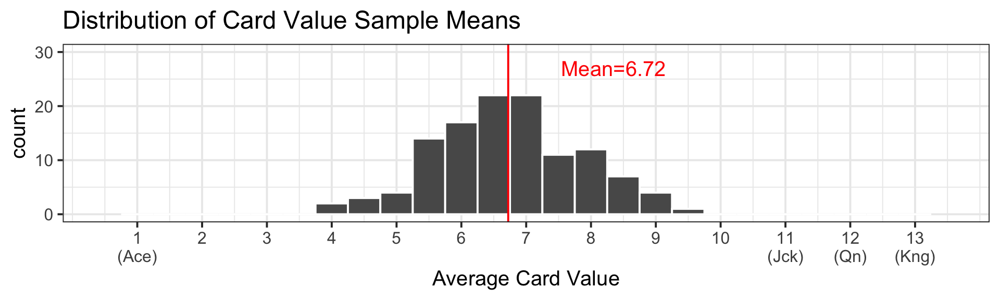
Why just a “snapshot”?
Q: How many elements are there in the sampling distribution? \[{52 \choose 10} = 15,820,024,220 \ \text{Samples}\]
We only took \(119\) samples (combining both sections)…
Sampling Distribution: a smaller scale
Consider a population of 4 students, where the (true) population proportion of March birthdays is \(p = \frac{1}{4} = 0.25\)
| name | bday_month |
|---|---|
| Joel | march |
| Maria | january |
| Arthur | april |
| Klaus | september |
- Practice: With a neighbor, write out the sampling distribution for \(\widehat{p}\) (the sample proportion of those with March birthdays) with…
- All possible samples of size 2
- All possible samples of size 3
- And, what are the means of these two sampling distributions?
Sampling Distribution: a smaller scale
- Sampling distribution for the sample proportion \(\widehat{p}\) from a sample of 2:
| name | bday_month |
|---|---|
| Joel | march |
| Maria | january |
| Arthur | april |
| Klaus | september |
| sample | phat |
|---|---|
| Joel + Maria | 0.5 |
| Joel + Arthur | 0.5 |
| Joel + Klaus | 0.5 |
| Maria + Arthur | 0.0 |
| Maria + Klaus | 0.0 |
| Arthur + Klaus | 0.0 |
- There are \({4 \choose 2} = 6\) elements in the sampling distribution
- Mean=0.25, which is \(p\)!
Sampling Distribution: a smaller scale
- Sampling distribution for the sample proportion \(\widehat{p}\) from a sample of 3:
| name | bday_month |
|---|---|
| Joel | march |
| Maria | january |
| Arthur | april |
| Klaus | september |
| sample | phat |
|---|---|
| Joel + Maria + Arthur | 1/3 |
| Joel + Maria + Klaus | 1/3 |
| Joel + Arthur + Klaus | 1/3 |
| Maria + Arthur + Klaus | 0 |
- There are \({4 \choose 3} = 4\) elements in the sampling distribution
- Mean=0.25, which is \(p\)! (again)
- Note: The means of the sampling distributions were all \(p = \frac{1}{4}\) even though none of the sample proportions \(\widehat{p}\) were equal to \(\frac{1}{4}\)!
Sampling Distribution
- Just like any distribution, the sampling distribution of a statistic has a mean, standard deviation, median, IQR, etc.
- Standard Error: standard deviation in a sampling distribution
- Ex. When estimating a population proportion (\(p\)) with the sample proportion (\(\widehat{p}\)) with sample size \(n\), theory shows that:
- The sampling distribution for \(\widehat p\) has mean \(p\)
- and has standard deviation (aka standard error) \(SE = \sqrt{\frac{p (1-p)}{n}}\)
- This means if the population proportion \(p = 0.20\) and \(n=100\), then in sampling distribution:
- mean(\(\widehat{p}\)) = \(p\) = 0.20
- \(SE = \sqrt{\frac{0.20(1 - 0.20)}{100}} = 0.04\)
Sampling Distribution vs. Population Distribution
For most sample statistics and sufficiently large sample sizes (\(n \geq 30\) is a rule of thumb), the sampling distribution will be approximately bell-shaped, even if the population is not
Both distributions will have the same center.
But, the sampling distribution will have lower variability than the population distribution.
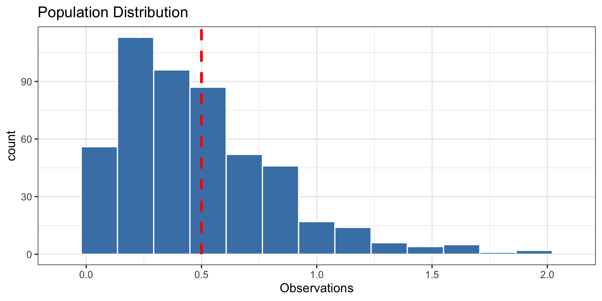
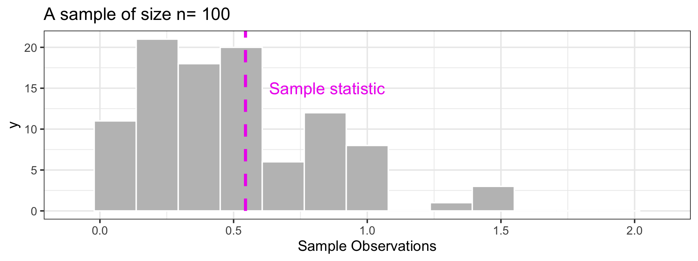
Why are Sampling Distributions Useful?
What we want to know:
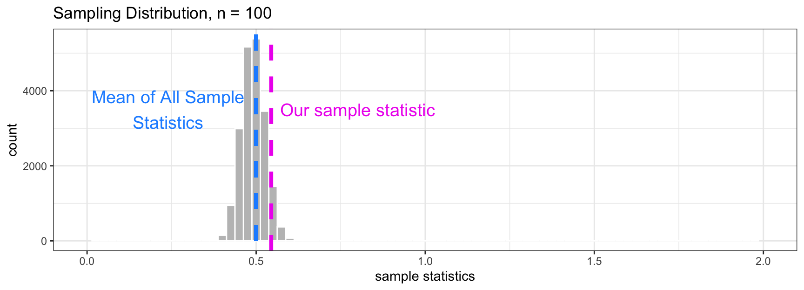
What we have:
What sampling distributions tell us about what we have:
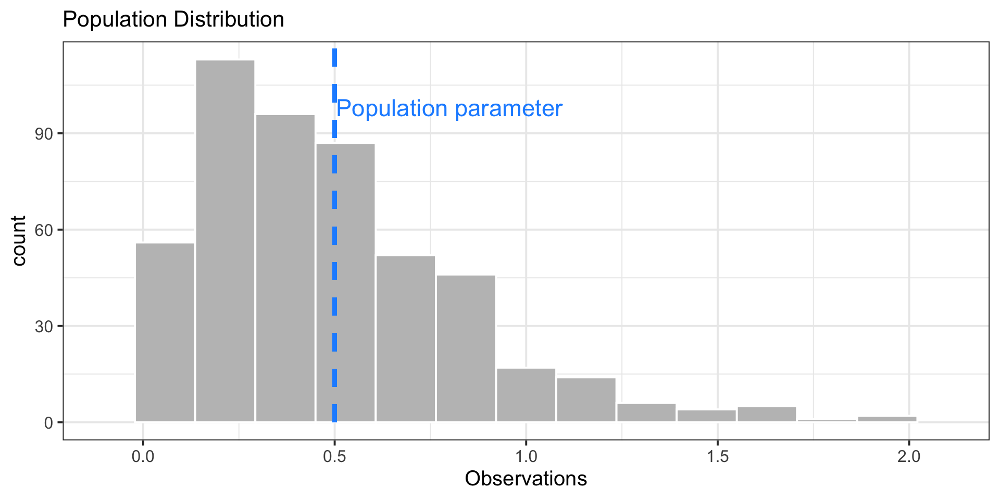
Variability in Samples
The standard error (\(se\)) of a sample statistic measures variability between different samples.
For \(\approx\) bell-shaped distributions, about 95% of observations fall within two standard errors of the population’s mean \(\mu\).
Very useful implication!
- The sampling distribution for the sample average, \(\bar{x}\) is \(\approx\) bell-shaped
- … and is centered at the population mean, \(\mu\).
- So 95% of all sample statistics, \(\widehat p\), fall within 2 standard errors of \(p\)!
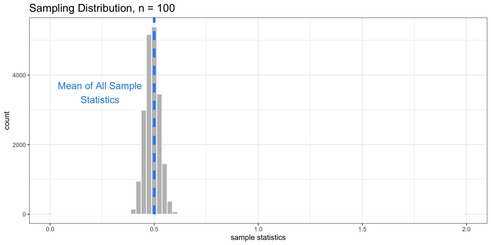
This is very powerful!
Even though we just have one sample, if we know \(se\), we know how far away from the parameter our statistic is likely to fall!
- This allows us to give quantitative plausible ranges for the parameter
Variability and Sample Size
Variability of the sampling distribution generally decreases as sample size increases
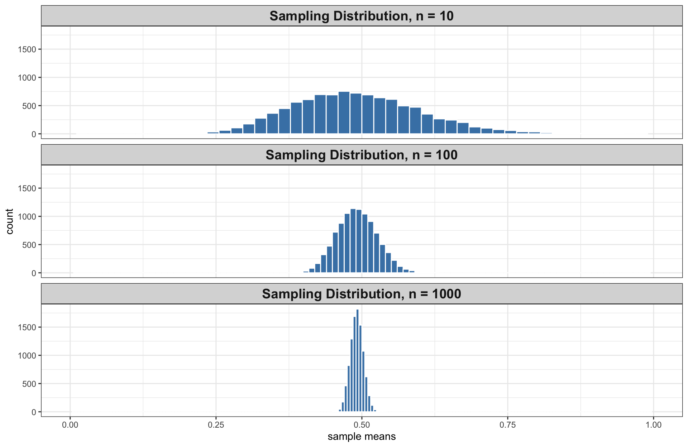
- Implication: Our statistic \(\bar{x}\) is likely to be closer to parameter \(\mu\) as sample size \(n\) increases.
Variability and Sample Size
- The sampling distributions for \(n = 10\), \(100\), and \(1000\) are all approximately bell-shaped, and so 95% of sample means are within 2 standard errors of the population mean.
- Highlighted in green are the intervals containing 95% of all sample means:
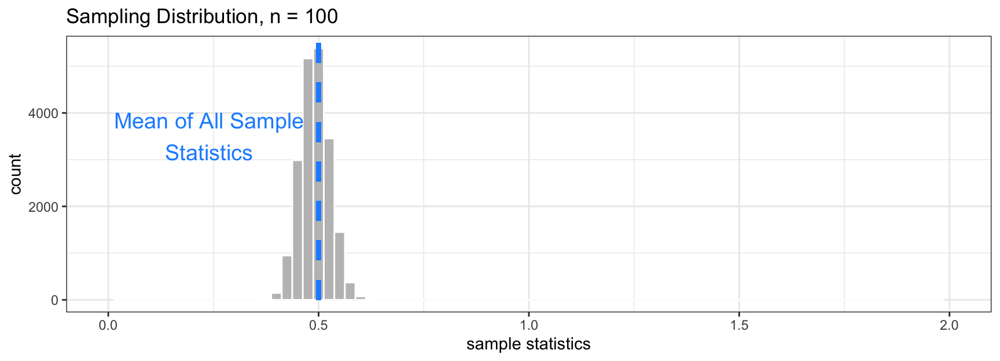
The Shape of the Sampling Distribution: word of warning
When \(n \geq 30\), the sampling distribution is usually bell-shaped. But sometimes, you need a large sample size.
- Example: A funky population distribution.
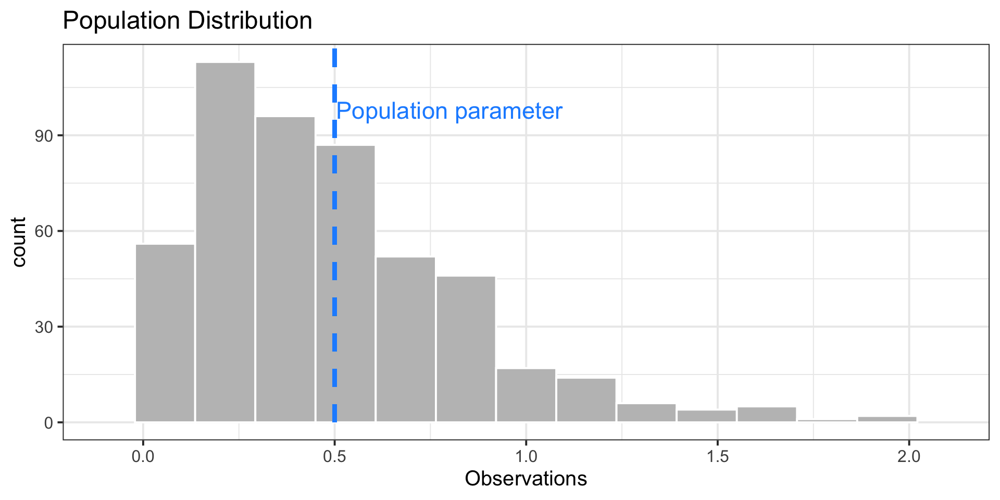
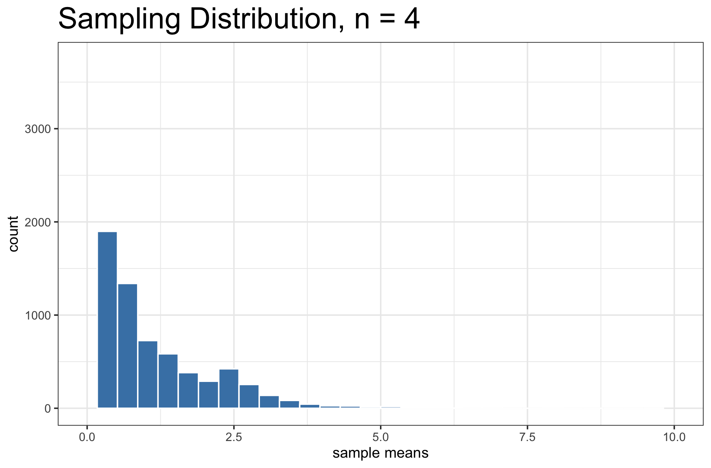
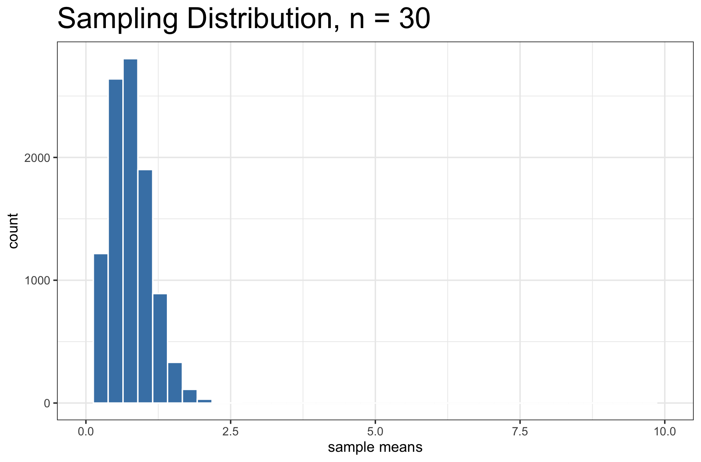
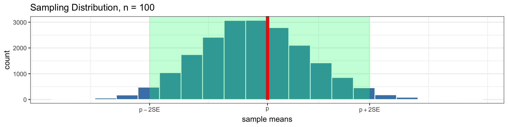
Key Features of a Sampling Distribution
What did we learn about sampling distributions?
Centered around the true population parameter.
As the sample size increases, the standard error (SE) of the statistic decreases.
As the sample size increases, the shape of the sampling distribution becomes more bell-shaped and symmetric.
Question:
If I am estimating a parameter in a real example, why won’t I be able to construct the sampling distribution?
Cliffhanger:
How can we learn from the sampling distribution if we only have one sample?
Week 4 Feedback (n = 33)
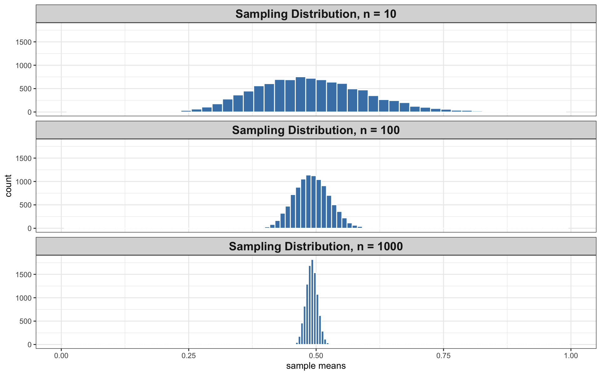
Week 4 Feedback (n = 33)
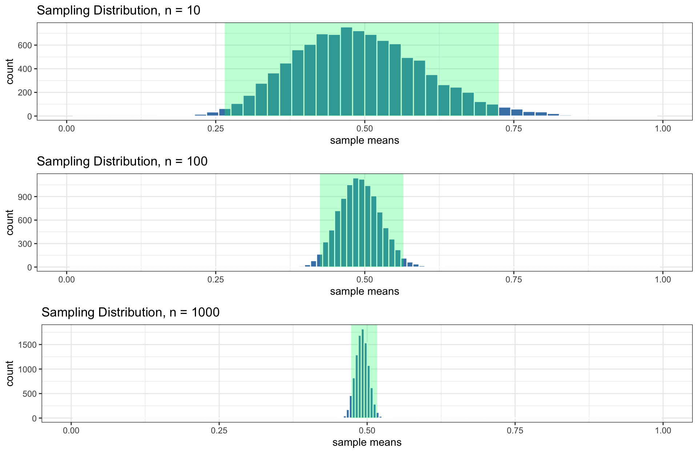